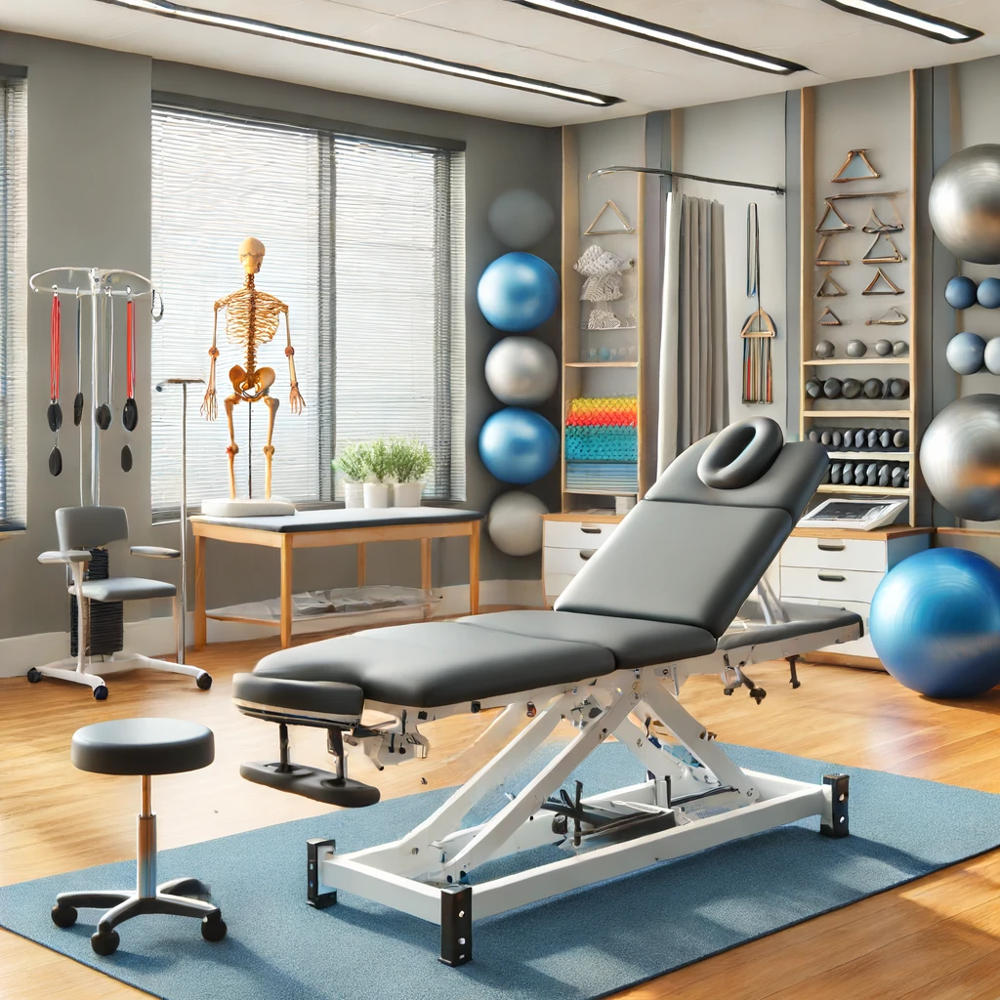

Nos Services
Chez Kiné Santé, nous offrons une gamme complète de services de kinésithérapie adaptés à vos besoins. Notre objectif est de vous aider à retrouver votre bien-être et votre mobilité grâce à des soins personnalisés et professionnels.
- Rééducation : Programmes personnalisés pour aider à récupérer la mobilité après une blessure ou une opération.
- Massage thérapeutique : Techniques de massage pour soulager la douleur et réduire le stress.
- Thérapie manuelle : Manipulations manuelles pour traiter les dysfonctionnements musculo-squelettiques.
- Rééducation posturale : Techniques pour améliorer la posture et réduire les douleurs chroniques.
- Kinésithérapie sportive : Traitements spécialisés pour les athlètes et les amateurs de sport.
Nos Installations
Nos installations modernes sont équipées de tout le matériel nécessaire pour fournir des soins de qualité. Découvrez nos différentes salles et équipements en images :



Exemples de Traitements
Voici quelques exemples de traitements que nous proposons :
- Rééducation après une chirurgie : Programme personnalisé pour aider à récupérer plus rapidement et efficacement.
- Massage thérapeutique pour le soulagement du stress : Séances de massage conçues pour réduire les tensions et améliorer le bien-être général.
- Thérapie manuelle pour les douleurs chroniques : Techniques de manipulation pour soulager les douleurs et améliorer la fonction musculo-squelettique.
Pour en savoir plus ou pour prendre rendez-vous, contactez-nous.